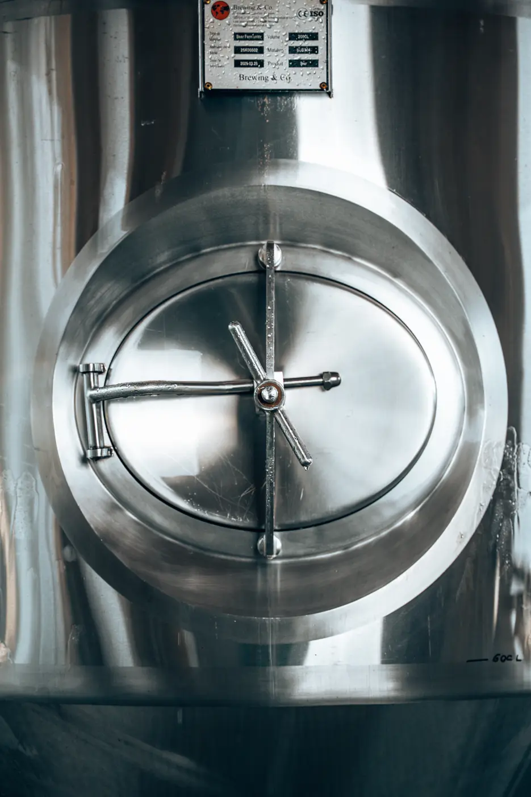
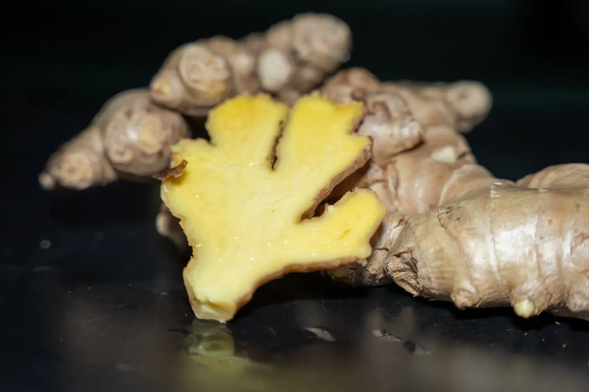

Fermentation · Sept. 2026
Qu’est-ce que la fermentation, vraiment ?
Du thé, du sucre, une culture vivante : ce qui se passe, jour après jour, dans nos cuves.
Coulisses de la brasserie, histoires d’ingrédients et petites bulles de savoir. Un article de temps en temps, jamais pressé.
Fermentation · Sept. 2026
Du thé, du sucre, une culture vivante : ce qui se passe, jour après jour, dans nos cuves.

Ingrédients · Août 2026
Une robe rubis, une pointe d’acidité : l’histoire d’un ingrédient pas comme les autres.

Brasserie · Juil. 2026
De l’infusion à la mise en bouteille, une journée type entre Sarlat et Montignac.

Fermentation · Juin 2026
Pas de gaz ajouté : les bulles naissent de la fermentation.

Ingrédients · Mars 2026
Quelques semaines par an : pourquoi on la guette, et comment elle arrive dans la recette.

Ingrédients · Févr. 2026
Râpé, pressé, infusé : le parcours d’une racine qui donne du caractère.

Fermentation · Janv. 2026
Garder le vivant : ce que ça change pour le goût et pour la conservation.

Ingrédients · Déc. 2025
Gousses de Madagascar, lente macération : le secret d’une rondeur de velours.